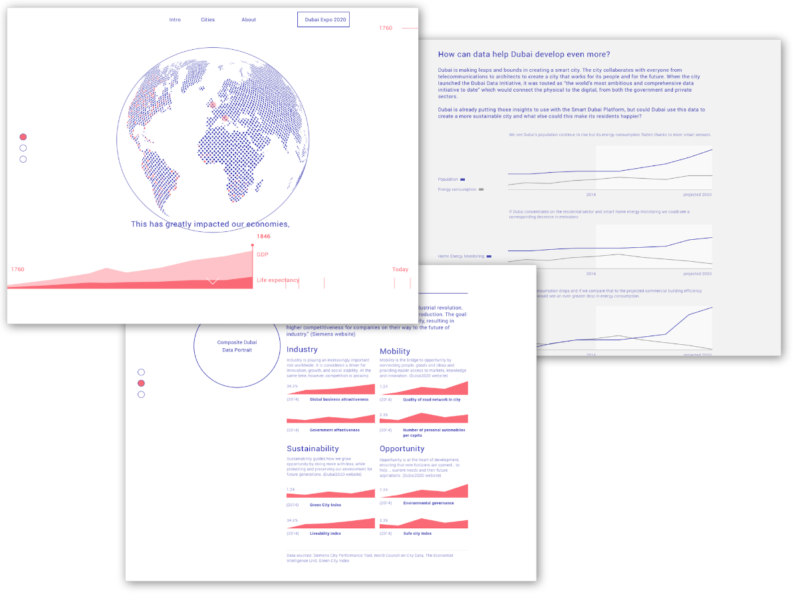

Siemens Atlas of Digitalisation
Overview & Challenge
Atlas of Digitalization was an effort by Siemens as part of The Dubai WorldExpo 2020 to visualise the effects and impacts of technology on our urban lives and how to make smart cities better. Signal Noise (part of The Economist Group) was tasked with the effort to create a data-led online, visualisation experience exploring Dubai, London, Los Angeles, Taipei, Buenos Aires and Johannesburg through the lenses of industry, mobility, sustainability and opportunity.
Role & Approach
My role was primarily to lead the creation of the data narrative. That included designing the storytelling and overall user experience, gathering and analysing of city data and helping direct visualisation.
Results
The Atlas of Digitalisation was an 3d (webGL), animated data visualisation experience online which took users through the story of the four eras of industrialisation through to today. This animation showed how industrialisation and digitalisation has progressed through history and different corresponsing data points such as GDP and carbon emissions. The atlas then led to individual data explorations for the six cities with editorial and commentary supported by the data for each.

Tomás Louro designed the final UI.